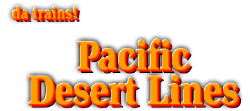

PDL - 03-08-30

Pacific Desert Lines is one of the largest N-Scale permanent layouts in the world. The new web site is at
http://sdsons.org
.
--
Back to da trains!
--
©2003
blanchard design
, all rights reserved